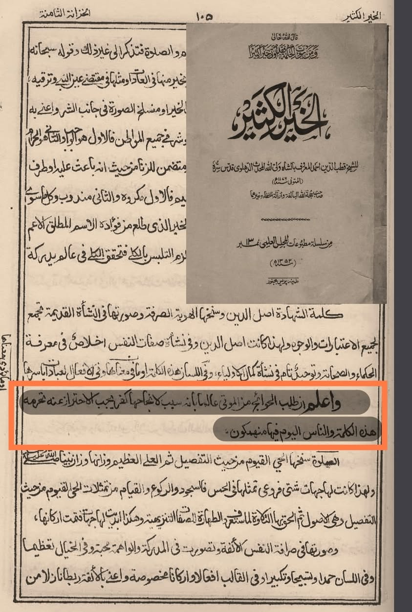

শাইখ জাহিদ আল-কাওসারির কুফর ও শিরকি আকিদাহ নিয়ে সমালোচনা উঠলেই তার একদল অন্ধ মুরিদান…
৯ জুন, ২০২৪
শাইখ জাহিদ আল-কাওসারির কুফর ও শিরকি আকিদাহ নিয়ে সমালোচনা উঠলেই তার একদল অন্ধ মুরিদান তেড়ে আসেন। আর তার ভ্রান্তিকে বৈধতা দেয়ার নানান পায়তারা করেন। যেমন: ‘মৃত বুযুর্গানে দ্বীনের আত্মার সাহায্য কামনা করার মাসআলা’
অন্ধ মুরিদানের ভাষ্য মতে, এ আকিদাহকে সর্বোচ্চ বেদআত বা হারাম বলা গেলেও কুফর কিংবা শিরক বলা যায় না; কেননা কাওসারি গং আল্লাহকে মূল মেনে আত্মাকে জাস্ট কল্যাণ লাভের সবব বা কারণ মনে করে সাহায্য চাওয়ার কথা বলেন। কিন্তু অক্ষরবাদী সালাফিরা না বুঝে সবকিছুতে কুফর আর শিরক দেখতে পায়(?)
জবাবে আমরা পেশ করি ইমামুল হিন্দ শাহ ওয়ালিউল্লাহ রাহ-এর অমর উক্তি। তিনি বলেন—
وعلم أن طلب الحوائج من الموتى عالما بانه سبب لانجاحها كفر يجب الاحتراز عنه. تحرّمه هذه الكلمة. و الناس اليوم فيها منهمكون.
জেনে রাখো! মৃত ব্যক্তিকে সফলতার সবব-কারণ মনে করে তার কাছে প্রয়োজন তলব করা কুফরি। এত্থেকে বিরত থাকা ওয়াজিব। কালিমায়ে তাওহিদ তা হারাম ঘোষণা করে। অথচ, মানুষ আজকাল এ কুফরিতেই নিমজ্জিত রয়েছে। [আল-খাইরুল কাসির— ১০৫]
দেখুন, তিনি সুস্পষ্টভাবে কোনো মৃত ব্যক্তি/আত্মাকে কারণ জ্ঞান করে তার কাছে কোনো প্রয়োজন পুরণের আবেদন জানানোকে কুফরি আখ্যা দিয়েছেন, যা ফখরুদ্দিন রাজি থেকে ধার করা জাহিদ কাওসারির কফরি আকিদাহ।
তাহলে কি কালামি ভাইয়েরা এ কথা বলবে যে, শাহ ওয়ালিউল্লাহ আকিদাহ বুঝতেন না? তাঁর তাওহিদ সালাফিদের মতো বিকৃত তাওহিদ?
এক জাহিদ কাওসারির কুফরি আকিদাহকে ডিফেন্স করতে যেয়ে তারা জনসাধারণের ঈমান নিয়ে যে ছিনিমিনি খেলছে, আল্লাহর দরবারে নিশ্চয়ই এর জবাবদিহিতা করতে হবে, তাদের অন্তরে কি আল্লাহর ভয় নেই!
শাইখ জাহিদ আল-কাওসারির কুফর ও শিরকি আকিদাহ নিয়ে সমালোচনা উঠলেই তার একদল অন্ধ মুরিদান তেড়ে আসেন। আর তার ভ্রান্তিকে বৈধতা দেয়ার নানান পায়তারা করেন। যেমন: ‘মৃত বুযুর্গানে দ্বীনের আত্মার সাহায্য কামনা করার মাসআলা’
অন্ধ মুরিদানের ভাষ্য মতে, এ আকিদাহকে সর্বোচ্চ বেদআত বা হারাম বলা গেলেও কুফর কিংবা শিরক বলা যায় না; কেননা কাওসারি গং আল্লাহকে মূল মেনে আত্মাকে জাস্ট কল্যাণ লাভের সবব বা কারণ মনে করে সাহায্য চাওয়ার কথা বলেন। কিন্তু অক্ষরবাদী সালাফিরা না বুঝে সবকিছুতে কুফর আর শিরক দেখতে পায়(?)
জবাবে আমরা পেশ করি ইমামুল হিন্দ শাহ ওয়ালিউল্লাহ রাহ-এর অমর উক্তি। তিনি বলেন—
وعلم أن طلب الحوائج من الموتى عالما بانه سبب لانجاحها كفر يجب الاحتراز عنه. تحرّمه هذه الكلمة. و الناس اليوم فيها منهمكون.
জেনে রাখো! মৃত ব্যক্তিকে সফলতার সবব-কারণ মনে করে তার কাছে প্রয়োজন তলব করা কুফরি। এত্থেকে বিরত থাকা ওয়াজিব। কালিমায়ে তাওহিদ তা হারাম ঘোষণা করে। অথচ, মানুষ আজকাল এ কুফরিতেই নিমজ্জিত রয়েছে। [আল-খাইরুল কাসির— ১০৫]
দেখুন, তিনি সুস্পষ্টভাবে কোনো মৃত ব্যক্তি/আত্মাকে কারণ জ্ঞান করে তার কাছে কোনো প্রয়োজন পুরণের আবেদন জানানোকে কুফরি আখ্যা দিয়েছেন, যা ফখরুদ্দিন রাজি থেকে ধার করা জাহিদ কাওসারির কফরি আকিদাহ।
তাহলে কি কালামি ভাইয়েরা এ কথা বলবে যে, শাহ ওয়ালিউল্লাহ আকিদাহ বুঝতেন না? তাঁর তাওহিদ সালাফিদের মতো বিকৃত তাওহিদ?
এক জাহিদ কাওসারির কুফরি আকিদাহকে ডিফেন্স করতে যেয়ে তারা জনসাধারণের ঈমান নিয়ে যে ছিনিমিনি খেলছে, আল্লাহর দরবারে নিশ্চয়ই এর জবাবদিহিতা করতে হবে, তাদের অন্তরে কি আল্লাহর ভয় নেই!
